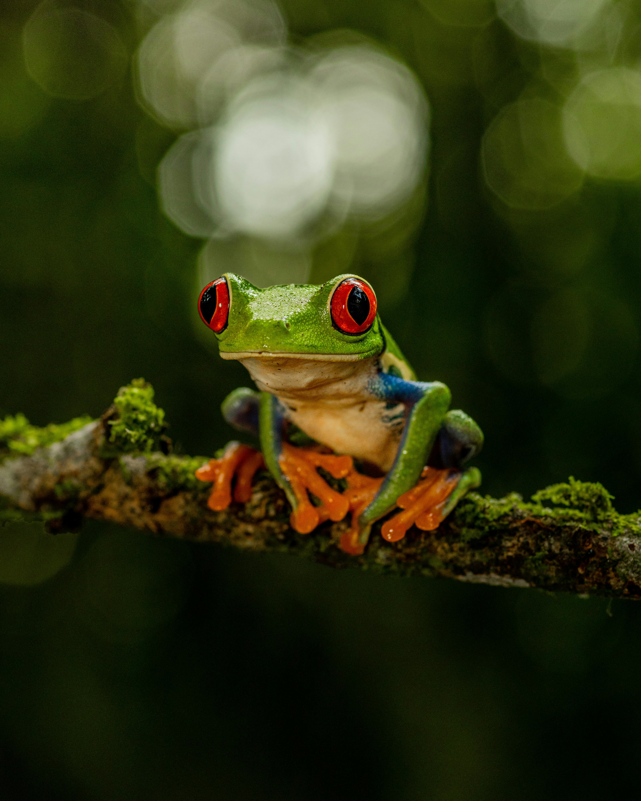
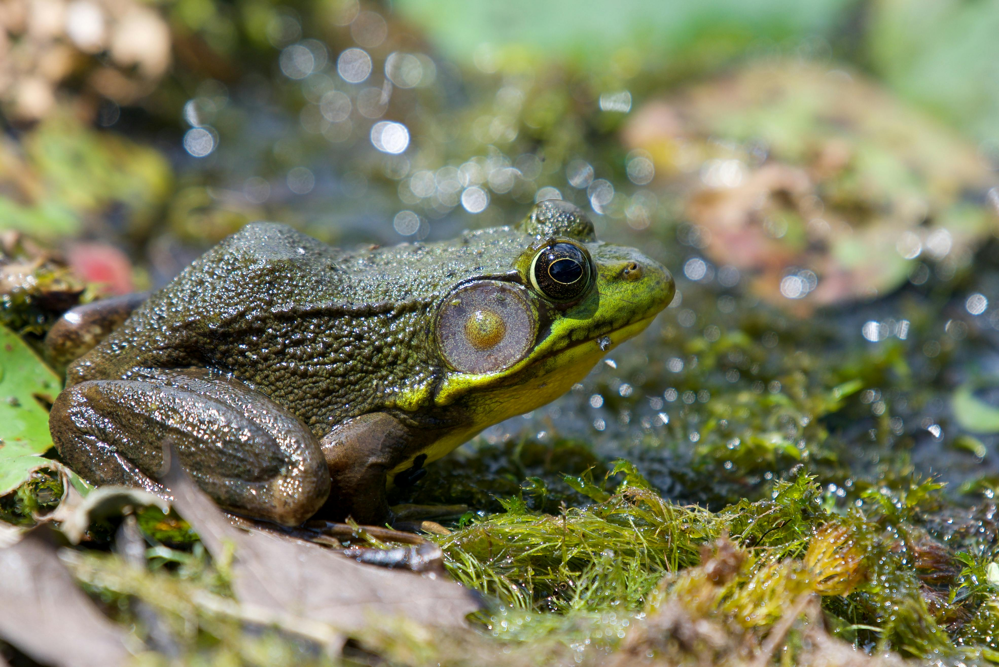
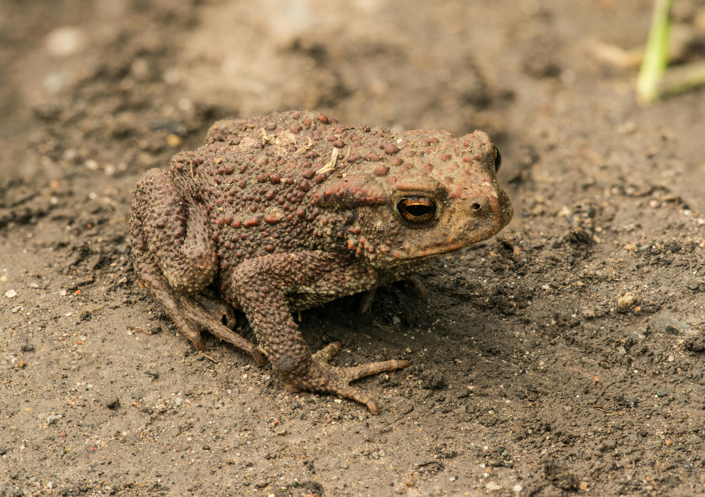
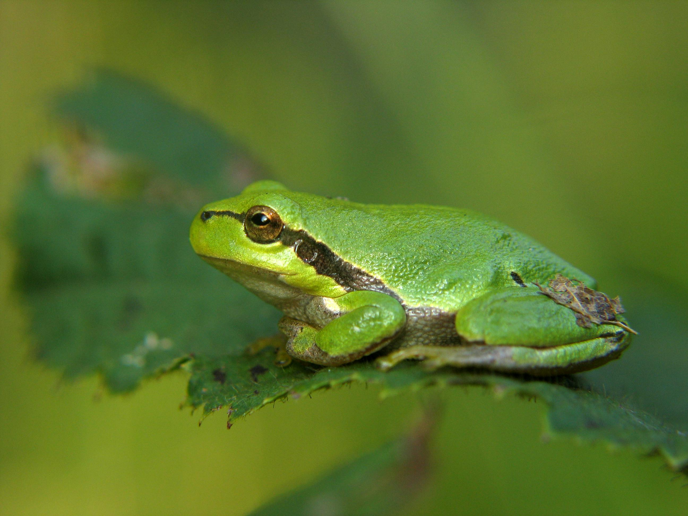
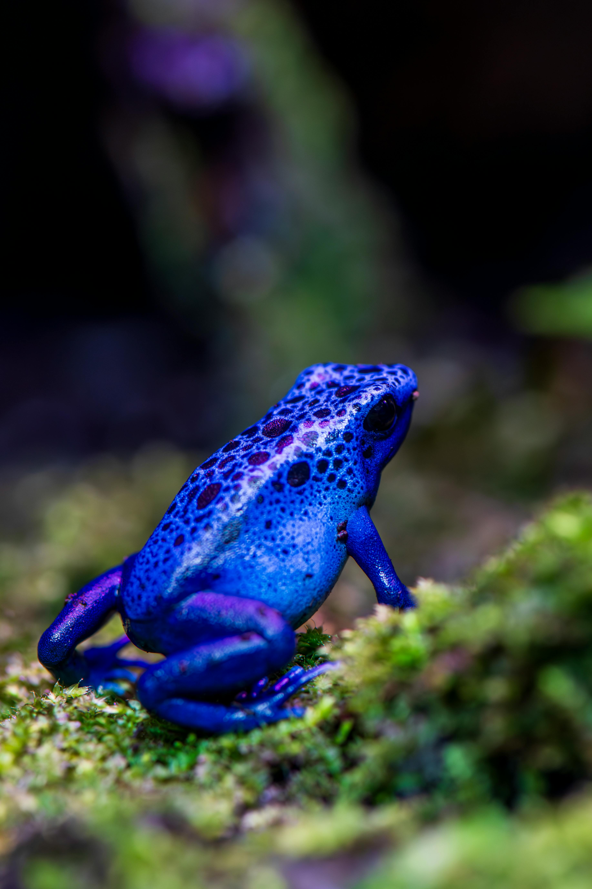

One of the silliest types of amphibians are frogs. These tailless creatures are very widly distributed throughout the globe, spanning in nearly all 7 continents minus Antartica. There are also at least 6,000 species of frogs.
Frogs are amphibians, meaning they are land and water animals. Parent frogs typically birth their babies in water so that their eggs are ready to transform into tadpoles. The tadpoles have two eyes and are as small as the eggs they've hatched from but have a small tail used for swimming. Eventually tadpoles devlop small legs to help them swim better and even another pair as young frogs. Adult frogs have two eyes and 4 legs, their tails do not continue growing in this stage. Two of which are their hindlegs which allow frogs to leap farther than their body lengths.
Frogs vary of size and colors, some of are more poisonous than others. Though most are green, there are also spotted and colorful frogs (most are poisonous).

One of the most common types of frogs are tree frogs, and there are hundreds of them! A common tree frog is the Red-Eye Tree Frog. These frogs are a just about 3 inches in lenght and habitat in tropical rainforests. Red-Eye Tree Frogs are completely nocturnal and rely on hiding during the day.

Another common frog are bullfrogs, like the American Bullfrog. These frogs are larger than tree frogs with powerful hindlegs for leaping great lengths. You might hear them ribbiting in warm bodies of freshwater like lakes or ponds.
If you ever wondered the difference between a frog and a toad, there is not much! First thing that you need to know is that toads are frogs. They are both tailless amphibians with hindlegs for leaping and swimming. Toads fit in the frog category with minor differences.
Frogs love warm and moist areas like marshes, ponds and rainforests. They have small smooth bodies and range of vibrant colors.
Toads are bumpier and are bigger than some frogs. Their bumpy nature and and dark colors lets them camoflauge in their habits better. Toads also prefer dry habitats to wet ones unlike other frogs.


Unfortunately, the most colorful frogs are often very poisonous. The most poisonous frog in the world is the Golden Poison Frog whose vibrant, yellow skin can produce toxins to kill 10 people. Watch out! Their skin secrets the toxins that protect them from being eaten from other predators. Luckily with diet, poison frogs can lose their toxicity when they are kept in captivity, like a zoo for example.
You might have heard of poison dart frogs, it's a common name for a type of poison frogs that are native to Central and South America. These frogs love the humid climates in these locations. Some dart frogs' poisons have even been used to make blowdarts which were commonly used in aboriginal South America.
A well known poisionous frog is the Blue Poison Dart Frog. This frog is a vibrant blue color, hence it's name. They also have unique spots of black on their small bodies.
